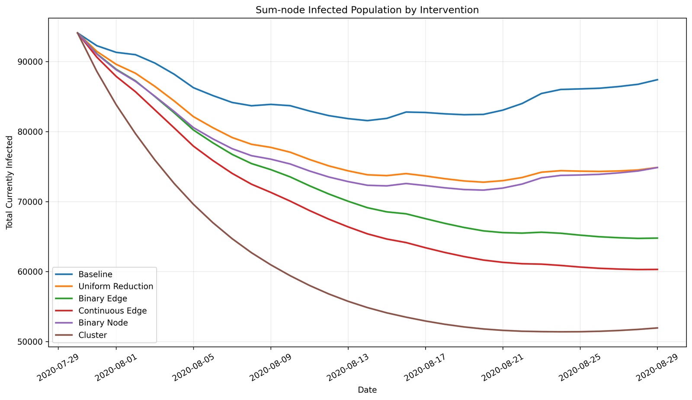

New infected
—
30-day outcome
Explore how different optimization policies reshape interstate mobility and epidemic outcomes.

Continuous Edge provides the strongest infection reduction among methods constrained near the 20% travel budget.
Binary Edge achieves a large infection reduction while removing less travel, but is harder to implement at fine granularity.
Cluster has the lowest infections in this run, but removes 86.89% of travel and is therefore not budget-matched to the other methods.
| Method | New infected | Infection reduction | Travel removed | Runtime |
|---|